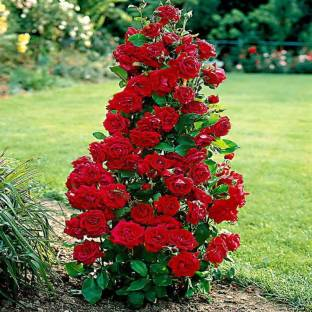

Fig.Rose
A rose is a woody perennial flowering plant of the genus Rosa, in the family Rosaceae, or the flower it bears. There are over three hundred species and tens of thousands of cultivars.
Roses are a popular crop for both domestic and commercial cut flowers. Generally they are harvested and cut when in bud, and held in refrigerated conditions until ready for display at their point of sale.
1.Perfume
2.Food and Drink
3.Medicine
4.Art and symbolism..etc